CS 180: Stitching Photo Mosaics |
Part A: Image Warping and Mosaicing |
IntroductionIn the first part of this project, we explore the fundamentals of warping images using homography-based transformations. |
Taking ImagesBelow are the sets of images that I will use to demonstrate basic image mosaicing. Please note that I did not have the time to collect as many images as I would have liked for Part A, so some images ("himal.png" and rectification images) were sourced online. "himal_left.png" "himal_ref.png" "himal_right.png" "hearst_ave_left.png"
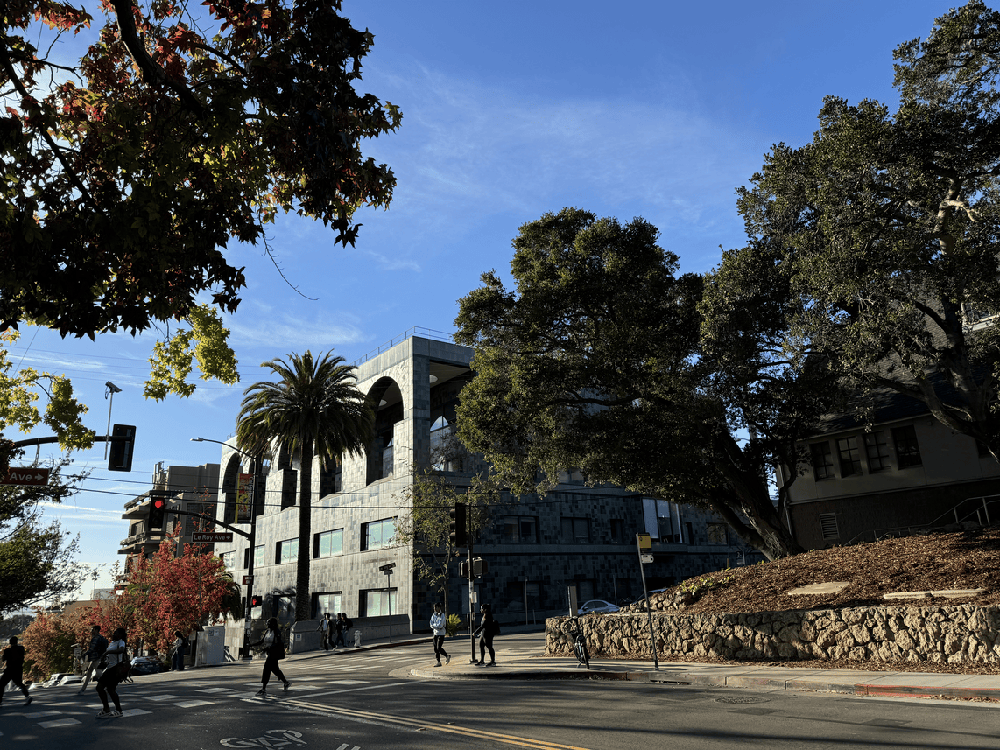
"hearst_ave_ref.png"
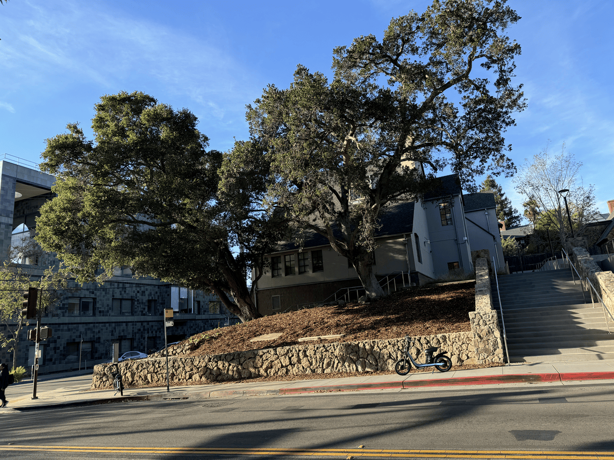
"hearst_ave_right.png"
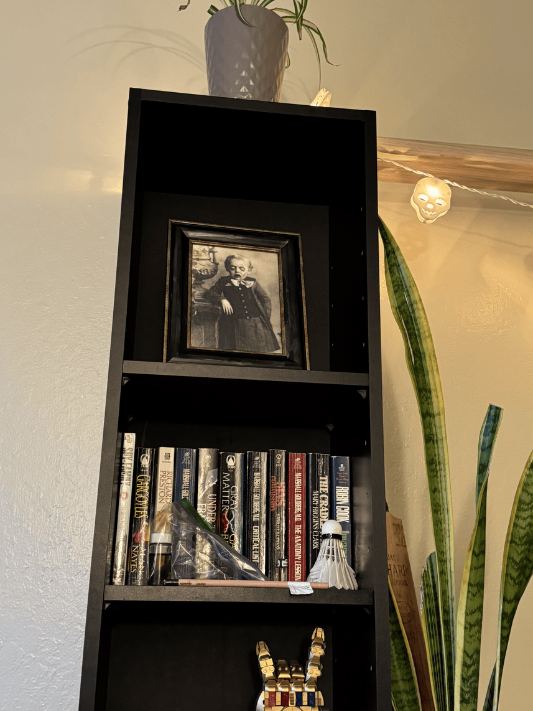
"shelf_top.png"
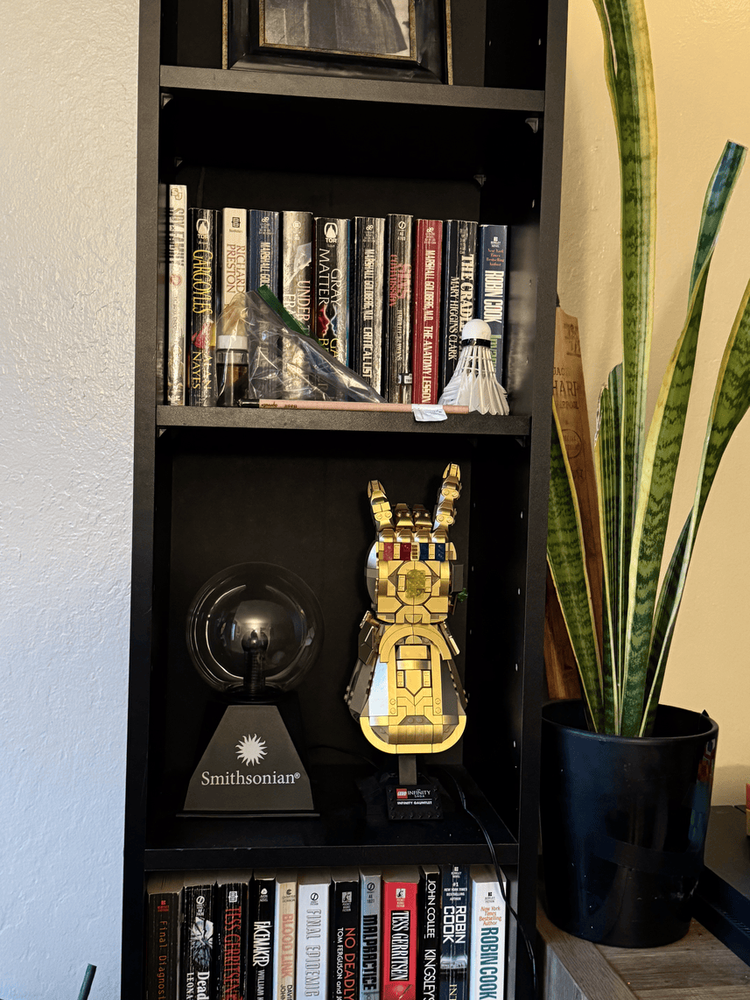
"shelf_ref.png"
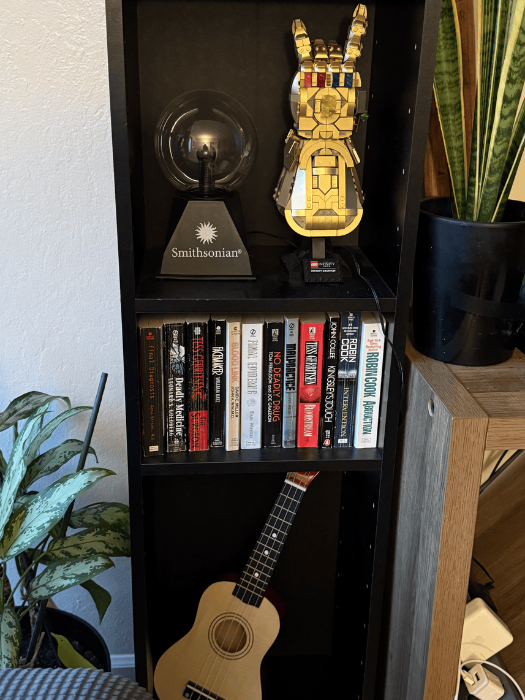
"shelf_bottom.png" |
Recovering HomographiesA homography is a transformation that projects points in one plane onto corresponding points in another plane. In order to apply this, we must first define correspondences between images. Here are some examples of what this may look like:
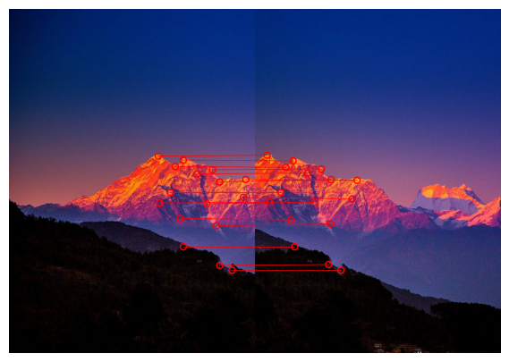
"himal" correspondences
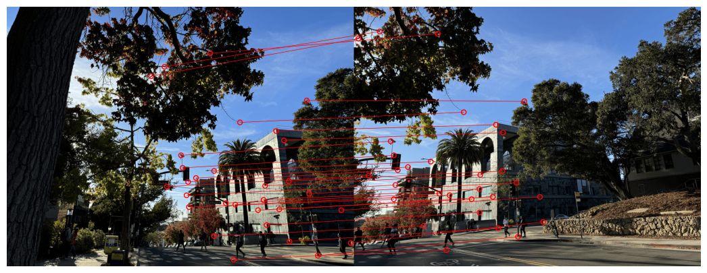
"hearst_ave" correspondences With a given set of source (\((x,y)\)) and target (\((x',y')\)) coordinates, we can compute a homography matrix \(H\): \[ \begin{bmatrix} a & b & c\\ d & e & f\\ g & h & 1 \end{bmatrix} \begin{bmatrix} x\\ y\\ 1 \end{bmatrix} = \begin{bmatrix} wx'\\ wy'\\ w \end{bmatrix} \] This can be manipulated into the form: \[ \begin{bmatrix} x & y & 1 & 0 & 0 & 0 & -xx' & -yx'\\ 0 & 0 & 0 & x & y & 1 & -xy' & -yy'\\ \end{bmatrix} \begin{bmatrix} a\\ b\\ c\\ d\\ e\\ f\\ g\\ h\\ \end{bmatrix} = \begin{bmatrix} x'\\ y'\\ \end{bmatrix} \] For each corresponding pair of source and target coordinates, we make rows according to the manipulated form above, and stack them to obtain an overconstrained least-squares problem. We simply solve this for the variables, and construct \(H\) accordingly. |
Image WarpingWe can now warp and mosaic images using a series of homographies. For the first part of this project, I keep this relatively simple. I begin by warping each image to the plane of a reference image. I use these warps to create an output array that can house all images, and keep track of a global origin for our reference image. I place each image in its own output array and create masks using distance transforms. I then iterate through the images, performing multi-resolution blending with Laplacian and Gaussian stacks. I keep track of a mosaic mask that allows for more complex blending, though it does sometimes result in blurred image outlines. Here is an example of how these intermediate warps and masks may look like for a set of images:
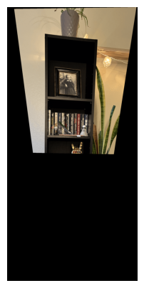
"shelf_top_w.png"
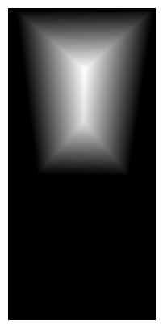
"shelf_top_w_mask.png"
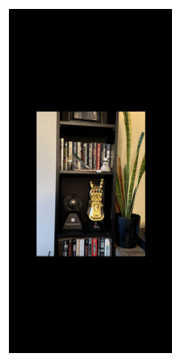
"shelf_ref.png"
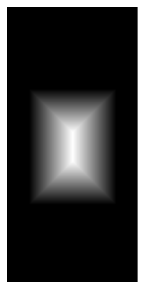
"shelf_ref_mask.png"
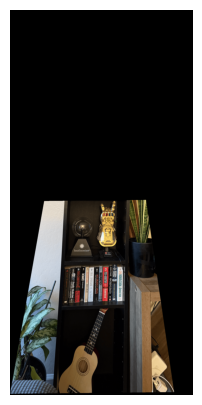
"shelf_bottom_w.png"
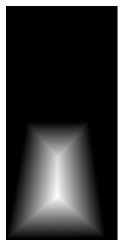
"shelf_bottom_w_mask.png" Below are the mosaics for each set of images. Edges and blurry artifacts are visible in some cases due to differences in lighting, human error, and the mosaic mask. "himal_mosaic.png" 
"hearst_ave_mosaic.png" 
"shelf_mosaic.png" |
Image RectificationLastly, we can perform image rectification. This involves selecting correspondences that depict a region we know is a rectangle. We can then warp the image with some appropriately set target correspondences to look at the rectangle straight on. Here are some results: 
"tennis.jpg"
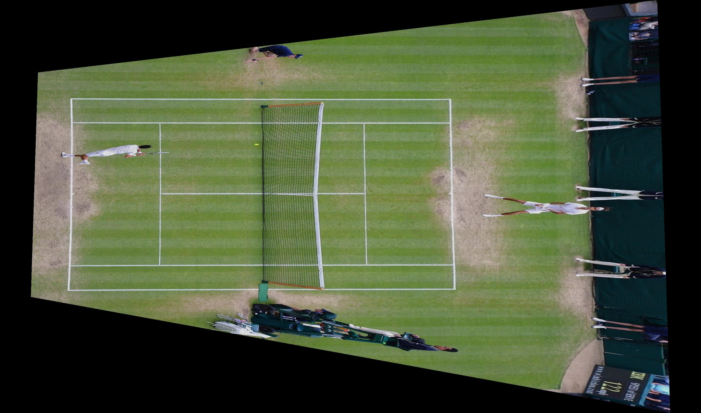
"tennis_rectified.jpg" "einstein_table.jpg" "einstein_table_rectified.jpg"
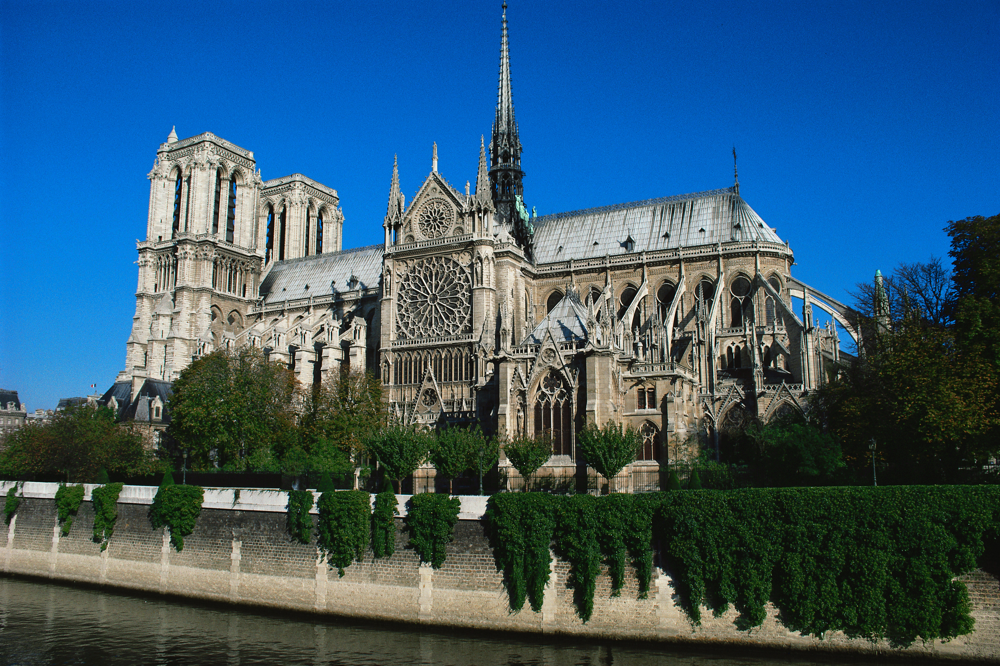
"notre_dame.jpg"
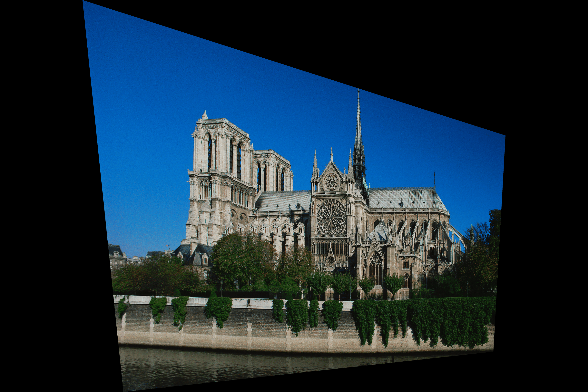
"notre_dame_rectified.jpg" |